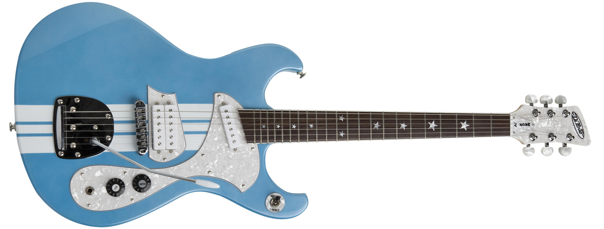

Mach IV
| Body | Mahogany |
| Neck | Maple |
| Fingerboard | Rosewood |
| Construction | Bolt on neck |
| Frets | 22 |
| Scale | 24 3/4" |
| Pickup | DiPinto single coil + DiPinto humbucker |
| Selector | Three position toggle switch |
| Controls | One volume, one tone |
| Bridge | Tune-o-matic w/ stop tailpiece |
| Tuners | Enclosed gear |